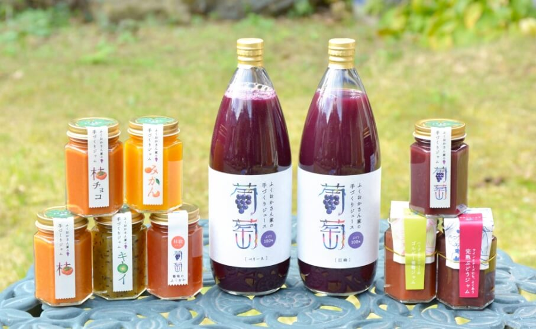

楽しみ方
農園を楽しむ
ぶどうを買うだけでなく、畑に人が集まる場所でありたい。直売所、夜の畑、マルシェ、収穫体験。開催年や日程は毎回異なります。


ナイトファーム
「畑の夜に幻想的なイベントができないか」という発想から始まった主催イベント。子どもは夜のぶどう畑を走ったりブランコに乗ったり、大人はワインを片手に談笑したり。出店を巡りながら、好きな場所でひとときを過ごす場です。
令和4年10月7日・8日、ナイトファームフェス2025でも開催しました。次回日程はNEWSとオンラインショップをご覧ください。
詳しく見る
ファームマーケット
冬マルシェなど、加工品や季節の恵みに出会う場。12月の最初の週末は、干し柿・ドライフルーツ・手づくりジャムなどの直売があります。来られない方はオンラインショップでも選べます。
詳しく見る